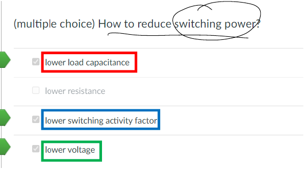

复习材料·Homework第 3 章往年 Homework 原题
题目来源
考试相关/DIC Review/Chap3 反相器/hw5_answer_2023_update.pdf · PDF页 4 · 原题号 选择3
原题按原编号列出；实验题明确整理为读图或笔试问法。重复知识点保留各来源版本，避免漏掉不同参数与条件。
先读：本题所需概念
功率 是单位时间能量，单位瓦特 ；能量 单位焦耳 。 的开关动态功耗来自电容充放电，短路功耗来自翻转时上下管同时导通，漏电功耗来自静态小电流。 是电源， 是负载， 是时钟频率， 表示题目指定的每周期平均活动次数；若统计 ，有 。电容储能为 ，一次完整充电从电源取能 。；短路峰值电流记 ，同时导通时间记 。一个完整高低周期包含两个边沿，事件频率与周期频率不能混用。，。
知识出处：PPT/chapter3-inverter04-power 20261026.pdf，PDF 第 3–43 页。
回看完整解释：11.1 三部分分别是什么 · 11.2 一次充电为什么有两个不同的能量数 · 11.3 每秒有多少次充电 · 11.4 短路电流什么时候出现，怎样算 · 11.5 漏电、最大功率与两种综合指标 · 11.6 最省能量不一定与最快是同一尺寸 · 11.7 尺寸缩小后，哪些量怎样变。题目中的专用参数以题干定义为准；可点带底纹的术语回查首次解释。
题目
【多选题】下列哪些方法能够降低开关动态功耗？
查看答案与解析
答案与解析
答案：、、。
降低负载电容、开关活动因子和供电电压。
核对说明：
若定义为每个时钟周期中所有方向的平均翻转次数，则式子会出现；讲义P0按充电事件定义。仅减小电阻并不降低每次完整充放电从电源取得的能量。
